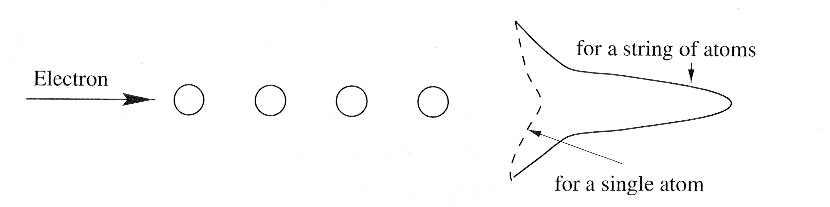

Chapter 2: Diffraction
Atomic Form Factor¶

part of
MSE672: Introduction to Transmission Electron Microscopy
Spring 2026 by Gerd Duscher
Microscopy Facilities Institute of Advanced Materials & Manufacturing Materials Science & Engineering The University of Tennessee, Knoxville
Background and methods to analysis and quantification of data acquired with transmission electron microscopes.
Overview¶
In this notebook we explore how an electron interacts with a single atom.
The key parameter for the interaction of an electron interacting with an atom is the atomic form-factor.
In the following of this diffraction section, we will look at the interaction of electrons with assemblies of atoms.
Import numerical and plotting python packages¶
Check Installed Packages¶
[1]:
import sys
import importlib.metadata
def test_package(package_name):
"""Test if package exists and returns version or -1"""
try:
version = importlib.metadata.version(package_name)
except importlib.metadata.PackageNotFoundError:
version = '-1'
return version
if test_package('pyTEMlib') < '0.2026.1.2':
print('installing pyTEMlib')
!{sys.executable} -m pip install --upgrade pyTEMlib -q
print('done')
done
Load the plotting and figure packages¶
Note for Google Colab
Restart Session in the Runtime Menu
The kinematic scattering package is in diffraction_tools of pyTEMlib. That library also includes the atomic form factors from Kirkland’s book.
[11]:
%matplotlib widget
import matplotlib.pyplot as plt
import numpy as np
# additional package
import scipy # we use the constants part again.
import sys
if 'google.colab' in sys.modules:
from google.colab import output
output.enable_custom_widget_manager()
# Import libraries from the pyTEMlib
import pyTEMlib # Kinematic scattering Library is in pyTEMlib.diffraction_tools
# with Atomic form factors from Kirklands book
Coulomb Force¶
The electron scatters at the Coulomb force of the screened nucleus of an atom. This force is:
$:nbsphinx-math:mathbf{F} = \frac{1}{4\pi\varepsilon_0}\frac{Qq}{r^2}\mathbf{\hat{e}}r = k\text{e}\frac{Qq}{r^2}\mathbf{\hat{e}}_r $
\(k_\text{e} = \frac{1}{4\pi\varepsilon_0}= 8.987\,551\,787\,368\,1764\times 10^9~\mathrm{N\ m^2\ C^{-2}}\)
[12]:
Z = 79 # gold
k_e = 1/(4* scipy.constants.pi * scipy.constants.epsilon_0)
F_r_m = k_e * Z* scipy.constants.elementary_charge**2 /scipy.constants.electron_mass
print(f" k_e = {k_e:.5} N m\u00b2C\u207B\u00b2")
print(f" F_r_m = {F_r_m:.1f} N m\u00b2 kg\u207B\u00B9 = {F_r_m:.1f} m\u00b3s\u207B\u00B2")
k_e = 8.9876e+09 N m²C⁻²
F_r_m = 20007.8 N m² kg⁻¹ = 20007.8 m³s⁻²
[13]:
def coulomb_plot(impact_param = 1.0, Z = 79, v_c = 0.5):
# all length are in m
#time interval for each iteration. Should be chosen small enough so that
#the velocity change and position change in this interval is relatively
#small. If too small this calculation will take a while
dt = 1e-20 # s
x = -50.0*1e-9 # starting x in m
y = impact_param*1e-9 #in m
#starting y
x_coords=[x] #array for the x coordinates of the plot
y_coords=[y] #array for the y coordinates of the plot
vx = v_c * scipy.constants.c #initial x velocity in m/s
vy = 0.0 #initial y velocity
r = np.sqrt(x*x + y*y)
rold = r*2 # an arbitrary value more than r
k_e = 1/(4* scipy.constants.pi * scipy.constants.epsilon_0) #[N m^2 C^-2]
F_r_m = -k_e * Z* scipy.constants.elementary_charge**2 /scipy.constants.electron_mass # [ N m^2 / kg]
# The plot coordinates are generated as long as the incident particle
# is going towards the origin( which means that r < rold )
# or
# if it is coming out, as long as r < 50.0 nm. You can choose this to be
# something else.
while (r < rold) or ( r < 50.0*1e-9) :
rold = r # old r is changed to the current r
x = x + vx*dt# calculate new x
y = y + vy*dt# calculate new y
# add x and y to the plotting coordinates for x and y
x_coords.append(x)
y_coords.append(y)
r = np.sqrt(x*x + y*y)
#vx = vx + x-acceleration*dt = vx + Fx/m*dt
#Fx = x component of Coulomb force = (magnitude of F)*cos(theta) =
#(magnitude of F)*x/r =
#vx = vx + (F_r/m/r^2)*x/r = F_r_m * x/r^3,
vx = vx + F_r_m*x/r**3*dt
#as for vx
vy = vy + F_r_m*y/r**3*dt
return np.array(x_coords), np.array(y_coords)
#plotting trajectories for 4 impact parameters
plt.figure()
for b in [-1e-5, -0.001, -0.1, -1.0, -2.0, -4.0, -6.0]:
xc, yc = coulomb_plot(b, Z= 29, v_c = 0.7)
plt.plot(xc*1e9,yc*1e9, label = str(b))
plt.xlabel('distance [nm]')
plt.ylabel('impact parameter [nm]')
plt.legend();
Above graph was calulated for 200keV electrons. What changes if you change the v_c = v/c parameter to higher or lower speeds?
E (keV) |
\(\lambda\) (pm) |
M/m\(_0\) |
v/c |
|---|---|---|---|
10 |
12.2 |
1.0796 |
0.1950 |
30 |
6.02 |
1.129 |
0.3284 |
100 |
3.70 |
1.1957 |
0.5482 |
200 |
2.51 |
1.3914 |
0.6953 |
400 |
1.64 |
1.7828 |
0.8275 |
1000 |
0.87 |
2.9569 |
0.9411 |
You can also change the atom number.
[14]:
#plotting trajectories for 7 impact parameters
plt.figure()
for b in [-1e-5, -0.001, -0.1, -1.0, -2.0, -4.0, -6.0]:
xc, yc = coulomb_plot(b, Z= 6, v_c = 0.7)
plt.plot(xc*1e9,yc*1e9, label = str(b))
plt.xlabel('distance [nm]')
plt.ylabel('impact parameter [nm]')
plt.legend()
plt.show()
If we look at the scattering power of a single atom that deflects an electron:

The scattering power is dependent on the so-called atomic form factor \(f_e\) ( the subscript \(_e\) means this is for electrons).
All form factors (X-ray, electrons, ions, neutrons, …) are based on a Fourier transform of a density distribution of the scattering object from real space to momentum (or reciprocal) space.
Since an electron scatters through the coulomb force of the (screend) nucleus, the form factor is the inner potential.
Atomic Form Factor¶
What does that mean for us:
The atomic structure factor gives the amplitude of an electron wave scattered from an isolated atom.
\(|f(\theta)|^2\) is proportional to the scattered intensity.
The atomic scattering factor depends on atomic number \(Z\), wavelength \(\lambda\) and scattering angle \(\theta\).
The atomic structure factors for each element are tabulated.
The atomic form factor gives us the probability of an electron scattering in a certain angle.
Tabulated Atomic Form Factors¶
The calculated form factors are tabulated and can be plotted according to the momentum transfer.
Here we use the values from Appendix C of Kirkland, “Advanced Computing in Electron Microscopy”, 3rd ed.
The calculation of electron form factor for specific \(q\) perfommed by the function feq in the kinematic_scattering of pyTEMlib using equation Kirkland C.17
[17]:
# recreating figure 5.8 (p.110) of Kirkland, "Advanced Computing in Electron Microscopy" 3rd ed.
x = []
ySi = []
yC = []
yCu =[]
yAu =[]
yU = []
for i in range(100):
x.append(i/5)
ySi.append(pyTEMlib.diffraction_tools.get_form_factor('Si', i/5))
yC.append(pyTEMlib.diffraction_tools.get_form_factor('C', i/5))
yCu.append(pyTEMlib.diffraction_tools.get_form_factor('Cu', i/5))
yAu.append(pyTEMlib.diffraction_tools.get_form_factor('Au', i/5))
yU.append(pyTEMlib.diffraction_tools.get_form_factor('U', i/5))
fig = plt.figure(figsize=(8, 6))
plt.plot(x,ySi,label='Si')
plt.plot(x,yC,label='C')
plt.plot(x,yCu,label='Cu')
plt.plot(x,yAu,label='Au')
plt.plot(x,yU,label='U')
plt.legend()
plt.ylabel('scattering factor (Å)')
plt.xlabel('scattering angle q (1/Å)')
plt.xlim(0,2)
plt.show()
Adding atoms in a row makes the atom just look heavier:

Similar effects appear if atoms are periodically arranged. That is discussed in more detail in the Structure Factors notebook.
Conclusion¶
The scattering power of an atom is given by the tabulated scattering factors. As long as there are no dynamic effects the scattering factors can be combined linearly.
Next we need to transfer our knowledge into a diffraction pattern.